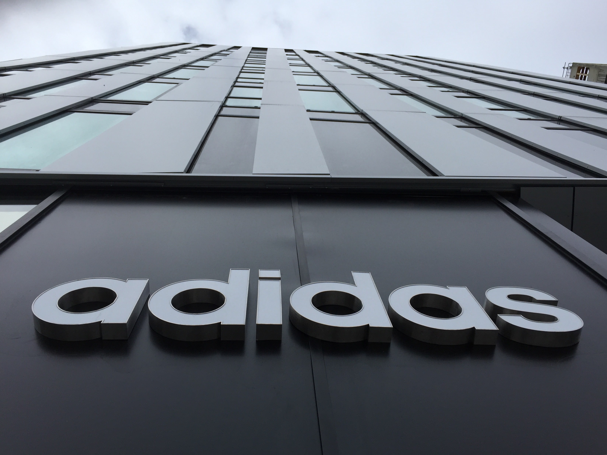

Adidas et ses diverses filiales (Adidas Originals, Adidas Style, Adidas Performance...) sont spécialisés dans les articles sportifs et ne cesse de se développer en élaborant des produits toujours plus résistants et qualitatifs.

Adidas engage également son éco-responsabilité et compte renforcer les innovations et les designs de ses produits de façon perpétuelle.La marque est parmi les meilleures dans son domaine et présente un chiffre d'affaires de plus de 19 milliards d'euros en 2016.
Création de la marque Yeezy :
En 2013, Kanye West annonce qu'il rejoint adidas pour y faire ce que Nike lui a toujours refusé : être le propre manager de sa gamme. Quelques mois plus tard, adidas YEEZY voit le jour au travers de la YEEZY Boost 750 avec son empeigne haute et sa sangle importante.
Avant de mettre son génie créatif au service d'adidas, c'est bien avec la marque au swoosh que Kanye appose son nom sur un modèle, la Air Yeezy. Nous sommes en 2009, et c'est d'ailleurs la première fois qu'un modèle de la firme de Portland porte le nom d'un artiste.